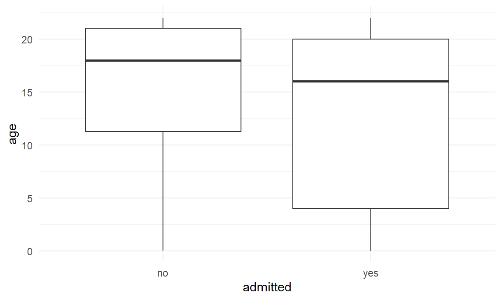
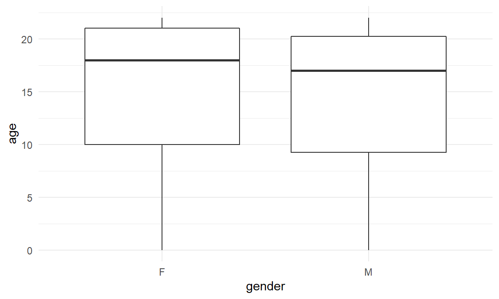
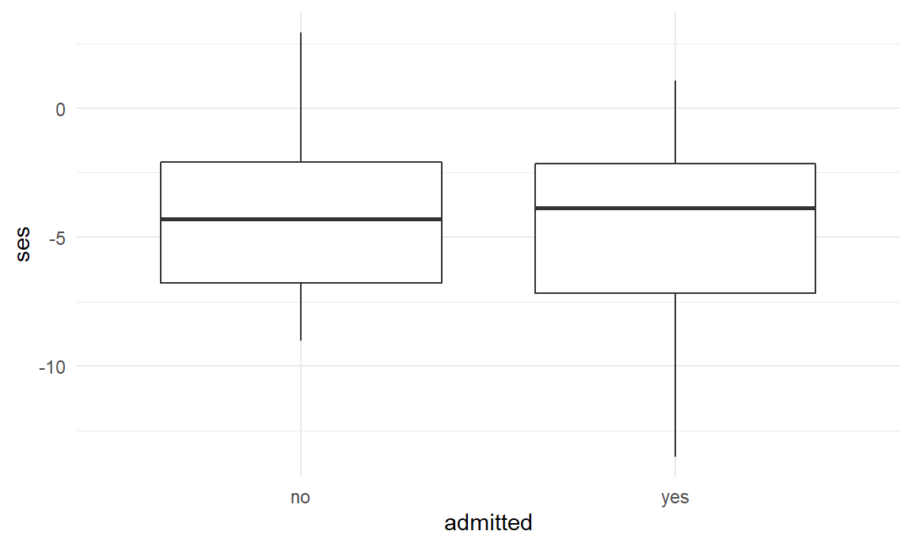
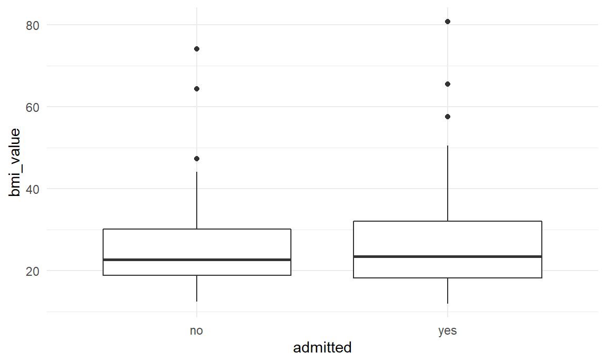
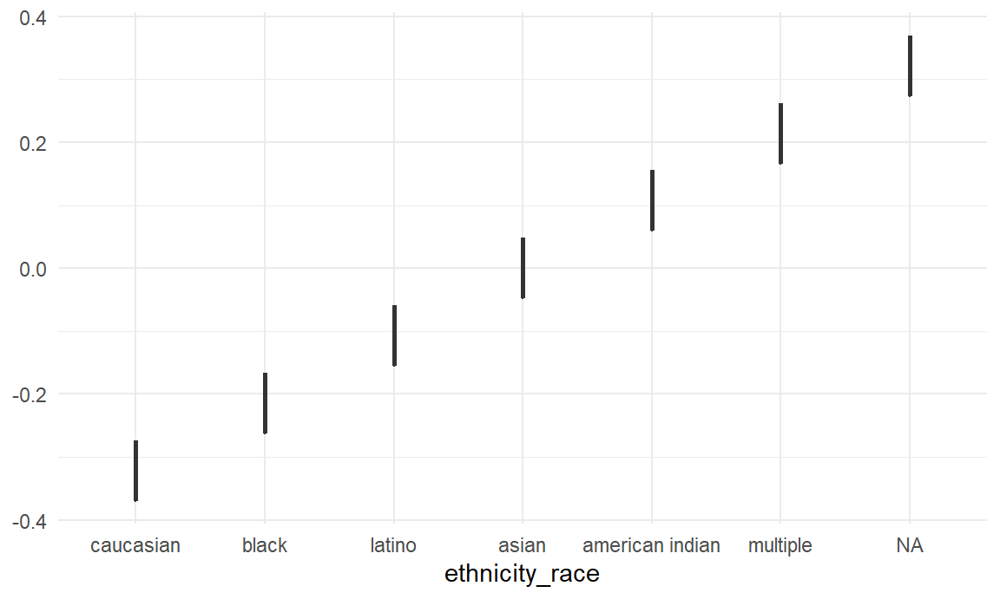

library(tidyverse)
library(usa)
library(mice)
knitr::opts_chunk$set(
fig.width = 6,
fig.asp = .6,
out.width = "90%")
theme_set(theme_minimal() + theme(legend.position = "bottom"))
options(
ggplot2.continuous.colour = "viridis",
ggplot2.continuous.fill = "viridis")
scale_colour_discrete = scale_color_viridis_d
scale_fill_discrete = scale_fill_viridis_d
knitr::opts_chunk$set(comment = NA, message = FALSE, warning = FALSE, echo = TRUE)Read in and tidy the data.
# Load and tidy data
ped_covid =
read_csv("./data/p8105_final_ped_covid.csv") %>%
mutate(
ethnicity_race = case_when(
race == "R3 Black or African-American" ~ "black",
race == "R2 Asian" ~ "asian",
race == "R5 White" ~ "caucasian",
race == "R1 American Indian or Alaska Native" ~ "american indian",
race == "Multiple Selected" ~ "multiple",
ethnicity == "E1 Spanish/Hispanic/Latino" ~ "latino"
)
) %>%
mutate(
asthma = replace_na(asthma_dx, 0),
asthma = str_replace(asthma, ".*J.*", "1"),
diabetes = replace_na(diabetes_dx, 0),
diabetes = str_replace(diabetes, ".*E.*", "1"),
zip = as.character(zip_code_set),
service = outcomeadmission_admission_1inpatient_admit_service,
ed = ed_yes_no_0_365_before,
admission_dx = admission_apr_drg,
icu = icu_yes_no
) %>%
mutate(obesity = case_when(
bmi_value >= 30 ~ "1",
bmi_value < 30 ~"0"
))# Merge zipcode data with latitude and longitude.
zipcode_df =
usa::zipcodes
ped_covid =
left_join(ped_covid, zipcode_df, by = "zip") %>%
select(admitted, age, gender, ses, zip, eventdatetime, bmi_value, icu, icu_date_time,
systolic_bp_value, ethnicity_race, asthma, diabetes, zip, service, ed, admission_dx,
city.y, obesity, lat, long) %>%
mutate_at(c("admitted", "icu", "ethnicity_race", "asthma", "diabetes",
"ed", "city.y", "obesity"), as.factor) %>%
mutate(
gender = factor(gender, levels = c("F", "M")),
ethnicity_race = factor(ethnicity_race, levels = c("caucasian", "black", "latino", "asian", "american indian", "multiple", "NA"))
) %>%
rename(city = city.y) # Impute missing data
impute = mice(ped_covid, m=3, seed=111)
iter imp variable
1 1 gender ses bmi_value systolic_bp_value ethnicity_race city obesity lat long
1 2 gender ses bmi_value systolic_bp_value ethnicity_race city obesity lat long
1 3 gender ses bmi_value systolic_bp_value ethnicity_race city obesity lat long
2 1 gender ses bmi_value systolic_bp_value ethnicity_race city obesity lat long
2 2 gender ses bmi_value systolic_bp_value ethnicity_race city obesity lat long
2 3 gender ses bmi_value systolic_bp_value ethnicity_race city obesity lat long
3 1 gender ses bmi_value systolic_bp_value ethnicity_race city obesity lat long
3 2 gender ses bmi_value systolic_bp_value* ethnicity_race city obesity lat long
3 3 gender ses bmi_value systolic_bp_value ethnicity_race city obesity lat long
4 1 gender ses bmi_value systolic_bp_value ethnicity_race city obesity lat long
4 2 gender ses bmi_value systolic_bp_value ethnicity_race city obesity lat long
4 3 gender ses bmi_value systolic_bp_value ethnicity_race city obesity lat long
5 1 gender ses bmi_value systolic_bp_value ethnicity_race city obesity lat long
5 2 gender ses bmi_value systolic_bp_value ethnicity_race city obesity lat long
5 3 gender ses bmi_value systolic_bp_value ethnicity_race city obesity lat longdatacomplete = complete(impute,2)# Export csv
write_csv(datacomplete, "datacomplete.csv")Some exploratory data visualizations
#bunch of ggplots
ped_covid %>%
ggplot(aes(x = admitted, y = age)) +
geom_boxplot()
ped_covid %>%
filter(
gender != "NA"
) %>%
ggplot(aes(x = gender, y = age)) +
geom_boxplot()
ped_covid %>%
ggplot(aes(x = admitted, y = ses)) +
geom_boxplot()
ped_covid %>%
ggplot(aes(x = admitted, y = bmi_value)) +
geom_boxplot()
ped_covid %>%
count(icu)# A tibble: 2 x 2
icu n
<fct> <int>
1 0 355
2 1 20ped_covid %>% count(ethnicity_race)# A tibble: 7 x 2
ethnicity_race n
<fct> <int>
1 caucasian 18
2 black 75
3 latino 189
4 asian 8
5 american indian 1
6 multiple 8
7 <NA> 76ped_covid %>%
ggplot(aes(x = ethnicity_race)) +
geom_boxplot()
Univariate models
#bunch of univariate logisitic regression models
glm(
admitted ~ age,
data = ped_covid,
family = binomial()
) %>%
broom::tidy()# A tibble: 2 x 5
term estimate std.error statistic p.value
<chr> <dbl> <dbl> <dbl> <dbl>
1 (Intercept) -0.0793 0.233 -0.341 0.733
2 age -0.0430 0.0147 -2.93 0.00337#p = 0.00337
glm(
admitted ~ gender,
data = ped_covid,
family = binomial()
) %>%
broom::tidy()# A tibble: 2 x 5
term estimate std.error statistic p.value
<chr> <dbl> <dbl> <dbl> <dbl>
1 (Intercept) -0.717 0.155 -4.63 0.00000369
2 genderM 0.0402 0.220 0.183 0.855 #p = 0.855
glm(
admitted ~ bmi_value,
data = ped_covid,
family = binomial()
) %>%
broom::tidy()# A tibble: 2 x 5
term estimate std.error statistic p.value
<chr> <dbl> <dbl> <dbl> <dbl>
1 (Intercept) -0.528 0.337 -1.57 0.117
2 bmi_value 0.0137 0.0122 1.12 0.263#p = 0.263
glm(
admitted ~ obesity,
data = ped_covid,
family = binomial()
) %>%
broom::tidy()# A tibble: 2 x 5
term estimate std.error statistic p.value
<chr> <dbl> <dbl> <dbl> <dbl>
1 (Intercept) -0.247 0.147 -1.68 0.0934
2 obesity1 0.247 0.278 0.889 0.374 #p = 0.374
glm(
admitted ~ asthma,
data = ped_covid,
family = binomial()
) %>%
broom::tidy()# A tibble: 2 x 5
term estimate std.error statistic p.value
<chr> <dbl> <dbl> <dbl> <dbl>
1 (Intercept) -0.790 0.122 -6.49 8.64e-11
2 asthma1 0.560 0.285 1.96 4.96e- 2#p = 4.96e- 2
glm(
admitted ~ diabetes,
data = ped_covid,
family = binomial()
) %>%
broom::tidy()# A tibble: 2 x 5
term estimate std.error statistic p.value
<chr> <dbl> <dbl> <dbl> <dbl>
1 (Intercept) -0.787 0.114 -6.90 5.10e-12
2 diabetes1 1.97 0.583 3.37 7.48e- 4#p = 7.48e- 4
glm(
admitted ~ ethnicity_race,
data = ped_covid,
family = binomial()
) %>%
broom::tidy()# A tibble: 6 x 5
term estimate std.error statistic p.value
<chr> <dbl> <dbl> <dbl> <dbl>
1 (Intercept) -0.223 0.474 -0.470 0.638
2 ethnicity_raceblack -0.411 0.533 -0.771 0.441
3 ethnicity_racelatino -0.423 0.498 -0.848 0.396
4 ethnicity_raceasian -0.288 0.871 -0.330 0.741
5 ethnicity_raceamerican indian -16.3 2400. -0.00681 0.995
6 ethnicity_racemultiple -16.3 848. -0.0193 0.985#no significant p values#fitting multivariate logistic regression model
glm(
admitted ~ age + gender + ethnicity_race + asthma + diabetes + obesity,
data = ped_covid,
family = binomial()
) %>%
broom::tidy() %>%
mutate(
OR = exp(estimate),
CI_lower = exp(estimate - 1.96 * std.error),
CI_upper = exp(estimate + 1.96 * std.error)
) %>%
select(term, OR, starts_with("CI"), p.value) %>%
knitr::kable(digits = 3)| term | OR | CI_lower | CI_upper | p.value |
|---|---|---|---|---|
| (Intercept) | 5.101 | 1.134 | 22.939 | 0.034 |
| age | 0.938 | 0.897 | 0.981 | 0.005 |
| genderM | 0.728 | 0.409 | 1.295 | 0.280 |
| ethnicity_raceblack | 0.336 | 0.086 | 1.318 | 0.118 |
| ethnicity_racelatino | 0.344 | 0.092 | 1.286 | 0.113 |
| ethnicity_raceasian | 0.323 | 0.044 | 2.371 | 0.266 |
| ethnicity_raceamerican indian | 0.000 | 0.000 | Inf | 0.986 |
| asthma1 | 0.931 | 0.468 | 1.856 | 0.840 |
| diabetes1 | 3.764 | 1.100 | 12.880 | 0.035 |
| obesity1 | 2.166 | 1.070 | 4.384 | 0.032 |
Among pediatric patients with COVID-19 infection, for every one year of age, the odds of being admitted was decreased by 6% and this association was statistically significant (p = 0.005), while adjusting for the other variables in the model.
Obesity (defined as a BMI > 30) was associated with an almost 2.2 times increased odds of admission (p = 0.03) while adjusting for the other variables in the model. A past medical history of diabetes was associated with an almost 3.8 times increased odds of admission (p = 0.03) while adjusting for the other variables in the model. Neither gender nor race were found to be associated with admission for COVID-19 infection among pediatric patients.